De: La Frikipedia, la enciclopedia extremadamente seria.
De: La Frikipedia, la enciclopedia extremadamente seria. De: La Frikipedia, la enciclopedia extremadamente seria.
King of Fighters Maximum Impact 2 es otro de los bizarros vidriojuegos creados por la franquicia malvada y cutre llamada SNK, la cual creaba hasta hace poco viles y terroríficos videojuegos de recreativas para que los gamers y otakus del género se gastaran los cuartos de un mes en las recreativas intentando vencer a un jefe final invencible como el joputa de Zero, Igniz o Krizalid.
Al ver que sus ganancias exponenciales eran desmesuradas y no podían pagar sus comidas en restaurantes increíblemente caros con monedas de céntimos decidieron ponerse a trabajar en algo que les resultara más productivo, por ello decidieron desarrollar un juego para Paysteision 2 y poder dejar de ganar monedas de céntimos y tener billetes frescos para ir a restaurantes caros a ponerse las botas.
Así los de SNK desarrollaron este juego de leshes para Paysteision con numerosos y bizarros personajes que lo único que querían era ahostiarse para luego decir una parida y más tarde ahostiar a un tipo que se creía muy homosexual fuerte y luego soltar una parida más grande que todas las anteriores juntas para que después el tipo y su pandilla se larguen de botellón con el premio del torneo.
El modo historia de este juego solo se basa en coger a tu pandilla de tipos e ir con ellos apaleando a los que se te crucen en medio hasta llegar al enemigo final, al cual te enfrentas con tres tipos, pero al ser extremadamente gallo. Después de apalearlo, el equipo tiene un final, que se resume en que se largan por ahí de copas o se líen a tortas con algún tiparraco que aparece por ahí.
Este vidirojuego tiene múltiples minijuegos por si el jugador se aburre como una ostra con jueguecitos sexuales extras un poco gilipollas, de entre los cuales destacamos:
Hay demás minijuegos, pero sería muy difícil nombrarlos todos dado que la lista es incríblemente larga.
El modo multijugador es más sencillo que abrir la boca para comer pan, dado que todo el mundo lo entinende, pero hay ciertas diferencias a otros juegos:
Hay otros modos multijugador, pero tambien son innombrables, como los infinitos minijuegos extra.
En este juego existe un increíble número de personajes ya que los de SNK querían que el jugador estuviera muy enviciado para que le dijera a sus compañeros que el juego era la leche y estos generaran un efecto dominó. Casi ocurrió, pero debido a que el juego era poco conocido se compró poco. De entre la enorme cantidad de equipos que hay se pueden encontrar estos de aquí.
| Afotaco del tipejo/a | ¿Lo cualo? | Ataques | Maximuns |
|---|---|---|---|
| 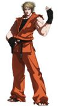 Ryo Sakazaki |
Es un Karateka creado por SNK siendo una vulgar parodia de Ken de Street Fighter. Heredó el complejo de mimo de su padre y a veces te lanza paredes invisiles sin venir a cuento y tiende a ser extremadamente idiota, como su padre. Vive con su hermana Yuri y el gilipollas de su padre en su |
Pues sus técnicas de karate fantoche. | Te hace una Shozoken (vulgar parodia de la Hadoken) o te hace un gancho sospechosamente parecido al Soryuken de Ken |
| 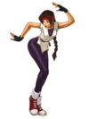 Yuri Sakazaki |
No hay mucho que hablar de la sexualidad de este personaje. Es una karateka hipercafeinada e hiperactiva que vive con su padre y hermano, pero siguen viviendo gracias a ella porque |
Te ataca a base de bofetadas. | Te empieza a sacudir de rodillazos o te arrea una Shozoken (pero esta no se parece tanto a una Hadoken) |
| 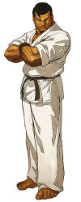 Takuma Sakazaki |
El el padre gilipollas de los dos anteriores. Se cree Superman para tener una identidad secreta y subirse a los árboles con una careta muy fea, pero eso era antes de que Ryo y Yuri le partieran la cara. Tiene cara de billete y le gusta enseñar sus cicatrices todo el tiempo. Durante una temporadita estuvo viviendo en México con sus hijos, pero los echaron a los dos meses por personas non gratas. | Te lanza gran cantidad de muros invisibles y hace el mimo. | Te lanza una apisonadora invisible para que te deje más plano que un billete de tranvía. |
| Afotaco del tipejo/a | ¿Lo cualo? | Ataques | Maximuns |
|---|---|---|---|
| 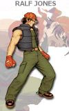 Ralf Jones |
Militar que siempre está borracho(verídico) y que da hostias explosivas. Es superior y novio de Clark, al cual da numerosas ordenes |
Te ahostia y ná más. | Te agarra y te |
| 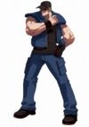 Clark Still |
Es el inferior inmediato de Ralf, al cual gusta de porculizar salvajemente cuando no están en guerra. Era el pretendiente de Leona, pero Ralf se le adelantó a ella y ahora este tipo es gay de manera irreversible. Ha leído muchas veces el kamasutra y gusta de hacer alguna que otra postura con su enemigo en medio de la pelea. | Te apaliza y practica el kamasutra contigo. | Te coge y te estrella muchas veces contra el suelo o te rompe |
| 100px Leona Gaidel |
Es la última componente del equipo de militaruchos dado que el jefazo no quiere pasarse por el lugar para "jugar" con sus hombres. Ataca con las uñas, algo muy raro dado que lleva guantes, aparte de que te lanza sus pendientes y mágicamente le aparece uno nuevo en la oreja. Quería un novio que fuese de su equipo, pero al ver a Ralf y a Clark bailar juntos se volvió lesbiana y nadie puede remediarlo. | Te pega tajos con las uñas. | Te mete un |
| Afotaco del tipejo/a | ¿Lo cualo? | Ataques | Maximuns |
|---|---|---|---|
| 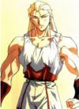 Andy Bogard |
Un ninja de octava regional que en teoría tiene algo con Mai, pero en realidad el muy gilipollas no se da de cuenta de que Mai le está dando del palo y se tira a todos los tipos que salen en el torneo. Lo último que ha hecho ha sido "adoptar" a Konohamaru, el de Naruto, pero le ha cambiado el nombre por Hokutomaru para que nadie se entere. | Da hostias raras y una especie de Rasengan de nivel 0,0002 a corta distancia. | Se te tira encima en llamas para que lo apagues, puesto que el muy imbécil no sabe utilizar un extintor. |
| 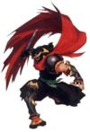 Hattori Hanzo |
Este ninja originalmente salía en Naruto, pero como se negaba a vestirse como los Jounin y llevar una bandana lo despidieron. Originalmente iba a ser el Líder de Akatsuki infiltrado en Konoha, pero fue expulsado antes de realizar el proyecto. Al estar sin curro fue subcontratado por los de SNK para que se metiera unas tortas con otros pardillos para ganarse el pan con sus técnicas super raras. Además es un cabrón de aúpa porque siempre pelea a los falso. | Llamita que salta no jutsu, aparezco encima y te rajo no jutsu y te agarro, hago una pirueta muy bonita y te estrello no jutsu. | Los mismos de antes pero hechos con un sello distinto (le salieron un día de casualidad). |
| 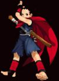 Hokutomaru |
Es el niño que Andy "adoptó" y entrenó en las técnicas ninja. El chavalín sufrió constantes abusos sexuales por parte del putón de Mai, y Andy era el único que lo entendía puesto que él también los sufría. Un día, Andy está aburrido de su pequeño experimento y le dice que se largue, pero el chaval vuelve porque su trauma con Mai fue atroz. | Te arrea con un palo y te tira Churikens. | Intenta invocar a Gammabunta pero le sale mal y se incendia, quemándote a ti de paso. |
| Afotaco del tipejo/a | ¿Lo cualo? | Ataques | Maximuns |
|---|---|---|---|
| 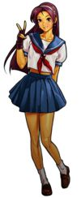 Athena Asamiya |
Loli suprema de la saga de KOF, que fundó el mismo equipo para liderar una nueva facción de chicas que aplacaran a las anteriores féminas sin ropa y de enormes melones que pululan por el juego. Ella antes era integrante de un equipo en el que convivía con un viejo verde y un homosexual, pero decidió formar este equipo revelación para demostrar que en el juego también había lolis. | Dar hostias y según ella, hacer chorradas |
Hacen mucha pupa, no puedo decir más. |
| 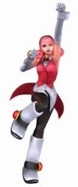 Mignon Beart |
Una nueva personaja creada por los de SNK, la cual está en una familia con una larga tradición en las artes de |
Según ella utiliza magia blanca, pero haga lo que haga hace bastante daño. | Te hace cosquillas y además tiene un maximun que ningún hombre ha podido resistir: Extreme Loli Attack. |
| 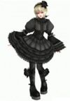 Ninon Beart |
Es otra nueva y es la hermana pequeña de Mignon. Es una Goti-Loli muy mala que tiene pensamientos muy malos, pero sigue siendo una loli adorable. Tubo una peleílla con su hermana hace tiempo porque se consideraba mejor |
Utiliza magia negra haciendo honor a cualquier goti-loli que se precie. | Se le ven las bragas y aprovecha que estás distraído para arrearte, además de hacer una versión mejorada del Extreme Loli Attack. |
| Afotaco del tipejo/a | ¿Lo cualo? | Ataques | Maximuns |
|---|---|---|---|
| Mai Shiranui | Ninja ninfómana y exhibicionista maestra del Bamboleo no jutsu. Ella fue la que enseñó a la zorra de Karin todo lo que sabe. Hipotéticamente está saliendo con Andy Bogard, pero él al ser tan imbécil que no se percata que ella le está poniendo los cuernos, pasa de todo y la deja a su bola. Además, Mai abusa sexualmente de Andy y de su niño adeoptado Hokutomaru. | El arte milenario |
Bamboleo Letal Max con el que no puedes hacer nada o se te tira encima para que te la tires y por en medio aprovecha para matarte. |
| 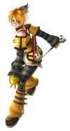 Nagase |
Una chavala que es ninja a tiempo parcial dado que está pluriempleada. Es juanker, garrota y ninja a la vez, así que ya veis que la vida de ninja no es del todo fácil como estar todo el día comiendo bolsas de patatas o espiar a las chicas en el baño. Esta chavala es capaz de entrar en tu ordenador, pasarse todos tus juegos apalstando tus records y matarte de paso. Además tiende a disfrazarse de neko de vez en cuando. | Te raja con sus katanas decoradas con cromos de pandas. | Te agarra y te estrella contra el suelo o se vuelve invisible o otras putadas iguales a las de su abuelito Hattori Hanzo. |
| 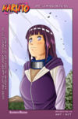 | Ella se metió en medio porque pensaba que Naruto iba a estar en el Ninja Team, pero quedó decepcionada. Mai intenta que se suelte más para ser más "cariñosa" con Naruto y así poder consumar su amor. | Los que tiene siempre además de algunos movimientos guarros que le enseñó Mai. | Versión poco perfeccionada del Bamboleo Letal, que mezclada con el Byakugan es capaz de aniquilar al enemigo por medio de su perversión. |
| Afotaco del tipejo/a | ¿Lo cualo? | Ataques | Maximuns |
|---|---|---|---|
| 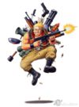 Marco Rossi |
Muchos dicen que es Ralf disfrazado, pero en realidad viene para cantarle las cuarenta a Ralf porque aún le debe 100 pelas de la porra de las guerras y Marco ganó porque acertó en el resultado de la guerra de Afganistán. | Sospechosamente tiene los mismos ataques de Ralf. | Los mismos que Ralf (muy sospechoso...) |
| 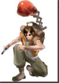 Tarma Roving |
Algunos dicen que es Clark de incógnito, pero es imposible porque Clark nunca se quita su gorra. Este también se metió para ahostiar a Ralf por no pagar la apuesta que acordaron. | Sospechosamente tiene los mismos que Clark. | Los mismos que Clark (más sospechoso que antes...) |
| 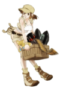 Fio Germi |
Se viene arrastrada por los otros dos al ver que los equipos eran de tres y que ellos solos no podrían contra esos dos gays y Leona juntos, y se les ocurrió que una lesbiana se combate con otra lesbiana. | Te hincha a granadas o te fusila con la Jebi Machin gan | Te pega de tiros con el Drosho o te arrea un par de machetazos. |
| Afotaco del tipejo/a | ¿Lo cualo? | Ataques | Maximuns |
|---|---|---|---|
| 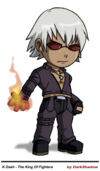 K Dash |
Un tipo que andaba todo tranquilo de la vida al que no tenían nada mejor que secuestrarlo y meterle los genes de Kyo para ver si este se metrosexualizaba con éxito, pero al ver que se descontrolaba su poder de atracción, le metieron un guante rojo muy chulo. Anda por ahí rondando con sus compañeros bichos de feria, siendo más chulito que nadie. Gusta de, en ocasiones, |
Según él, rabia pura pero lo que más hace es escaldarte bien. | Te tira las gafas de sol que lleva (verídico) o te invita a una barbacoa y aprovecha que estás distraído para echarte matarratas en tu comida |
| 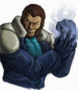 Maxima |
Otro al que le iban bien las cosas y que le secuestraron para convertirlo en un máquina |
Te arrea con sus metálicos puños o a cabezazos, rodillazos y un largo etc, aparte de lanzarte chorritos de vapor. | Saca un cañón raro del brazo y te mete un tiro que te deja tieso, aparte de empezar a jugar a dar toques de balón contigo como pelota. |
| 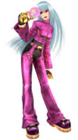 Kula Diamond |
Es una chica mona monísima, a la que le metieron genes de Kyo, pero a esta se los metieron adulterados, por lo que en vez de metrosexual salió loli. No se metió en el equipo de las lolis por conflictos de intereses, ya que a ella le gusta |
Estilo de patinaje artístico super chachi. | Se come una piruleta y le da un subidón de azucar. O eso o te deja como un cubito de hielo. |
| Afotaco del tipejo/a | ¿Lo cualo? | Ataques | Maximuns |
|---|---|---|---|
| 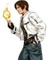 Kyo Kusanagi |
Un garrulo metrosexual y pirómano que se dedica a meterse en todos los fregaos que encuentra. Tiende a arrejuntarse con gente mala como un peligroso gay (léase Benimaru) o un karateka inmutable. Tiene nosequé rollo malo con Iori por algo de que sus abuelos un día empezaron un partido de fútbol y ganó el de Iori, pero el de Kyo no le dió las tres gallinas que acordaron y se largó y desde entonces Iori y Kyo andan mal, pero se sospecha que en realidad se quieren mucho.(Otro caso Itachi-Sasuke) | Te arrea y te quema de paso. | Te quema con su mechero o lanza un ataque suicida en llamas contra tí, pero como él tiene un extintor después se apaga el muy cabrón. |
| 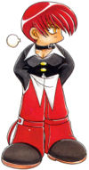 Iori Yagami |
Un pariente lejano de Light Yagami, ya que ese chaval gay heredó su risa. Este se lleva mal con Kyo por no se que cosa que tuvieron sus abuelos, pero muchos opinan que es una relación de amor-odio muy intensa. Detesta la violencia(verídico), pero el chaval a la mínima te suelta una hostia que no lo cuentas. Aparte, puede lanzar fuego violeta porque quema algodón de azucar con un mechero para que aparente que es peligroso. Por mucho que insistas, no le digas que es un emo, sino te convertirá en rodajas. | Te pega de uñazos, ideales para raspar la roña de debajo de los pies. Con esas zarpas también te hace un curioso ataque del que te tira de los calzones/bragas. | El tipo se imagina que le has llamado emo y entra en una especie de rabia psicótica chunga que te mete cuatro leches por microsegundo o te avienta una somanta de palos. |
| 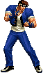 Shingo Yabuki |
Un chaval de lo más normal. Se puede decir que es el único tipo normal de KOF. No tiene poderes y le meten de palos por casi todos los lados, pero es todo un héroe. Era aprendiz de Kyo, pero al ver que Kyo tenía rollos "oscuros" con Iori decidió alejarse de ese personaje para no verse involucrado en sus temas. Ahora ha vuelto más preparado que nunca, pero por desgracia le encasquetaron en este equipo porque no había otro. | Los mismos de Kyo, pero sin fuego. Además de algunos que se ha currado él mismo (Shingo Kick) | Te mete un empujón para que te desmorres o te arrea una somanta de leches bien dada. |
| Afotaco del tipejo/a | ¿Lo cualo? | Ataques | Maximuns |
|---|---|---|---|
| Chizuru Kagura |
Es una copiona que se dedica a copiar todo lo que encuentra con su espejo y te lo manda, por lo que es extremadamente vaga. Es exorcista y le gusta jugar a la videoconsola con los demonios para que se vayan. Tenía una hermana, pero la mató el cabronazo de Goenitz en honor de su homosexual dios porrochi. Ahora le gusta divertirse con sus copias, pero está muy cabreada con el Kusanagi porque es un tipo muy malo. | Te manda copias de si misma para que tengas sexo con ellas y mientras te pega. | Hace una copia que baila Reggeton y al verla te da un coma cerebral. |
| 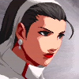 Maki Kagura |
Es la hermana de la anterior, pero Chizuru hizo una copia de ella con el espejo Yata para que distrayera a los enemigos con un Striptease. | Los mismos que Chizuru pero sin copias. | Esta vez es ella la que baila Reggeton y al verla te da un coma cerebral. |
| 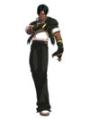 Kusanagi |
Copia que hizo Chizuzu del pedazo garrulo de Kyo por diversión y a ver si le metia de leches a alguien. Como este es muy malo, tiene problemas con Chizuru, pero últimamente se llevan mejor. | Los mismos que Kyo más alguno más que se curró él. | Los mismos que kyo(al tipo se le acabó la imaginación en los ataques normales) |
| Afotaco del tipejo/a | ¿Lo cualo? | Ataques | Maximuns |
|---|---|---|---|
| 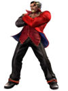 Duke |
Como tipo duro que es es el lider del equipo. Antes tenía una hermana pequeña, pero la palmó de tos porque no tenía un antitusivo y cuando vió a Neville decidió adoptarla para suplir su pérdida (incestuoso salió el jodío). Además es un peazo mastodonte que a la mínima te encasqueta una leche que te manda al mismo pino como revienta el suelo y te hace pagar los daños. No se sabe de donde, pero puede lanzar onditas granates con el pie. | Te arrea una somanta de palos que te deja tieso. | Revienta el suelo y te caes por el agujero o hace lo mismo de antes, pero más fuerte. |
| 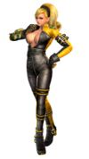 Lien Neville |
Una tipa que está toda jamona y por encima va enseñando el tetamen de manera ligera. Puede hacer cositas raras como hacer que el meteosat te lance un rayito de sol o a la mínima te returece el pescuezo. Fue adoptada por Duke, el cual le enseñó todo lo que sabe (que bien ha hecho el tipo), convirtiéndola en una potente |
Te retuerce el pescuezo o te hace cosas raras. | Te mete una somanta de palos por no pagarle el striptease. |
| 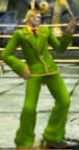 Hyena |
Este sencillamente es patético y gilipollas. No hace nada salvo deshonrar en noble oficio de mafioso con sus actos y su modo de pelea. | Te lanza cartas de poker o te arrea. | Hace una cosa tan patética que te mueres de risa. |
| 30 px Videojuegos de lucha |
|---|
| Dead or Alive | Fatal Fury | Guilty Gear | The King of Fighters | Marvel vs. Capcom | Mortal Kombat | Mortal Monkloa | Samurai Showdown | SVC Chaos: SNK vs. Capcom | Urban Reign | Super Smash Bros Brawl | Super Smash Bros Melee | Super Smash Bros. para Wii U/3DS | Street Fighter | Tekken | WWE |
Autor(es):